באנרי המדורים — מקור מול בנייה מחדש
בכל זוג: למעלה הקובץ שלך, למטה הבנייה מחדש. אותו עיצוב, אותם צבעים, אותם גופנים — רק שהצורות מצוירות כווקטורים והכיתוב מוקלד חי, ולכן אין גבול לחדות.
הַמָּאוֹר שֶׁבָּהּ
המקורהבנייה מחדש
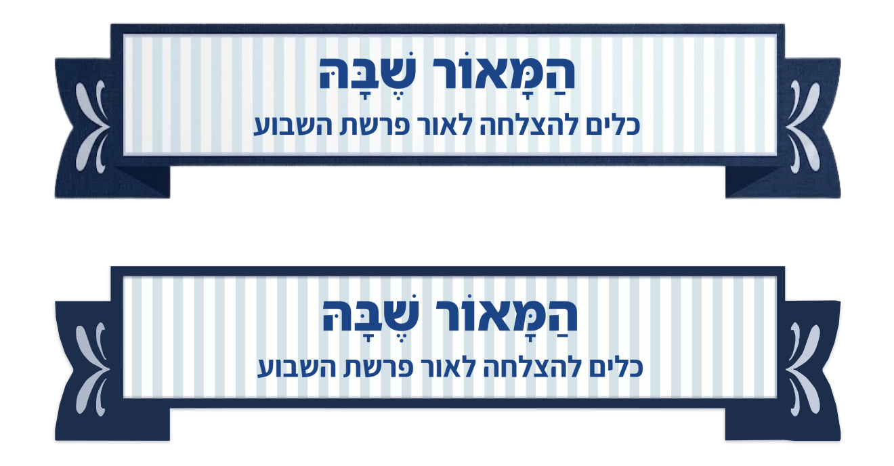
זום על הכותרת — פיקסלים אמיתיים, בלי החלקה
המקורהבנייה מחדש
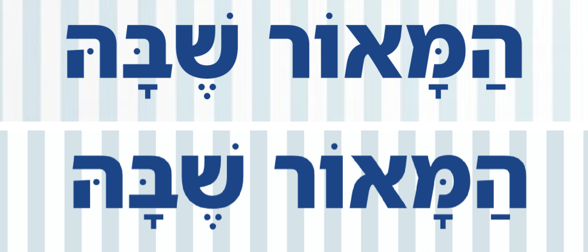
מָתוֹק לַנֶּפֶשׁ
המקורהבנייה מחדש
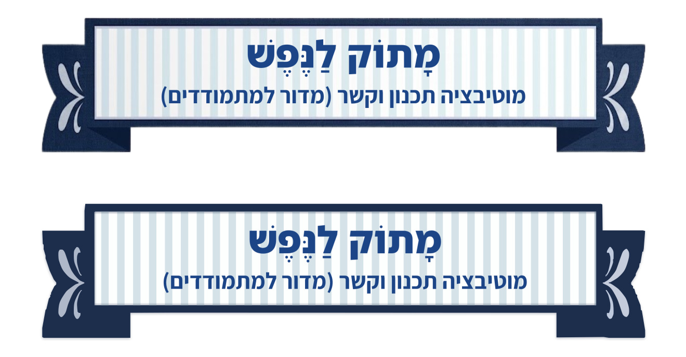
זום על הכותרת — פיקסלים אמיתיים, בלי החלקה
המקורהבנייה מחדש
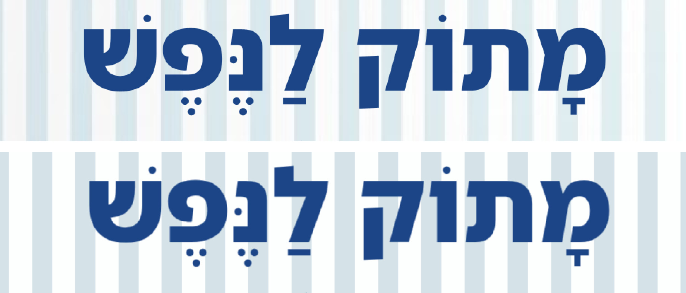
צְעָדֵנִי וְאִוָּשֵׁעָה
המקורהבנייה מחדש
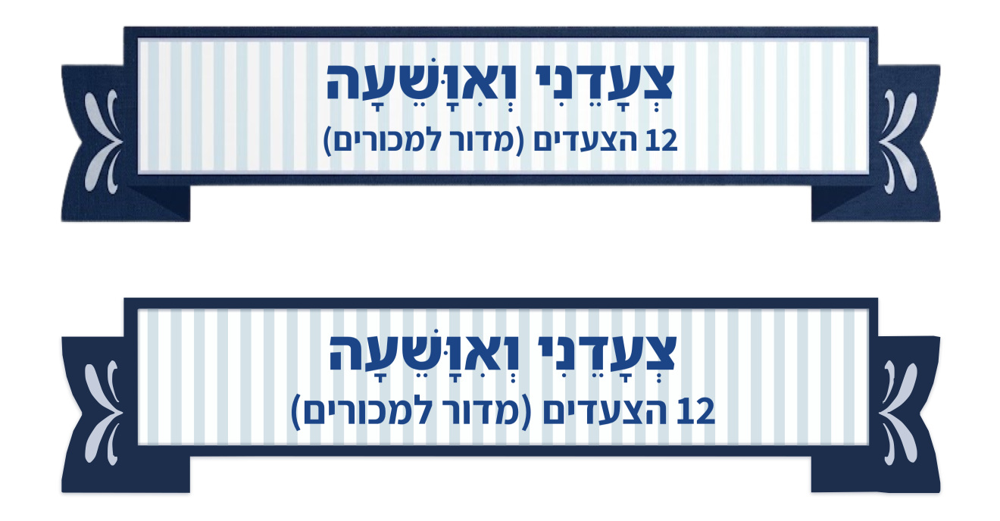
זום על הכותרת — פיקסלים אמיתיים, בלי החלקה
המקורהבנייה מחדש
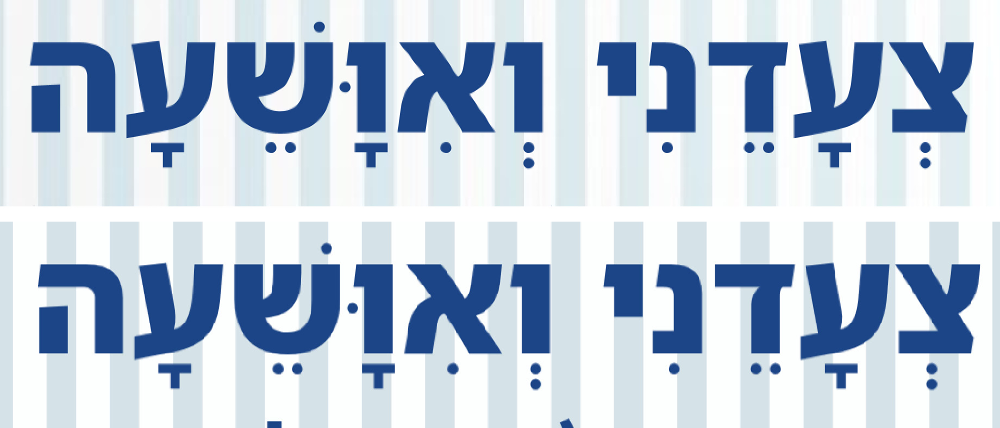
הצבעים לא נבחרו בעין: רקע הלוח, גוון הפסים, כחול הסרט וגוון כל עלה בעיטור —
כולם נמדדו מהקובץ שלך. גם שני העלים בכל צד קיבלו את הגוון שלהם בנפרד, כי בעיצוב שלך הצד הימני
בהיר יותר מהשמאלי.
סימטריה בעיטורים — הוכרע
בקובץ המקורי הצד הימני בהיר מהשמאלי: ימין 199,211,230 · שמאל
180,189,202. נבחר ב׳ — שני הצדדים בהירים (16.8.2026), וזה מה שנבנה
בבאנרים למעלה. השורות כאן נשארות לתיעוד.
הַמָּאוֹר שֶׁבָּהּ

שורה עליונה: א׳ — כמו בעיצוב המקורישורה תחתונה: ב׳ — נבחר
מָתוֹק לַנֶּפֶשׁ
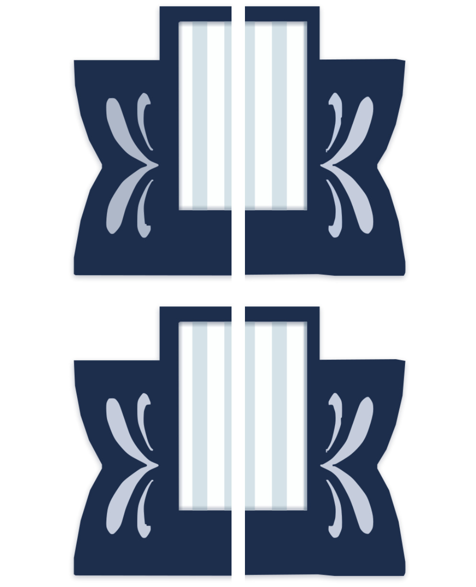
שורה עליונה: א׳ — כמו בעיצוב המקורישורה תחתונה: ב׳ — נבחר
צְעָדֵנִי וְאִוָּשֵׁעָה

שורה עליונה: א׳ — כמו בעיצוב המקורישורה תחתונה: ב׳ — נבחר
הכותרת הראשית — א׳ מול ב׳
שתי האפשרויות, כל אחת בקופסה משלה עם השם מעליה, כדי שלא יהיה ספק מה זה מה. בשתיהן המסגרת הכחולה כבר סימטרית — 59 פיקסלים בכל ארבעת הצדדים (בקובץ המקורי היה 67 משמאל, 61 מימין, 52 למעלה, 58 למטה).
א׳ — הקובץ הנוכחי (ייצוא מהסליידס)
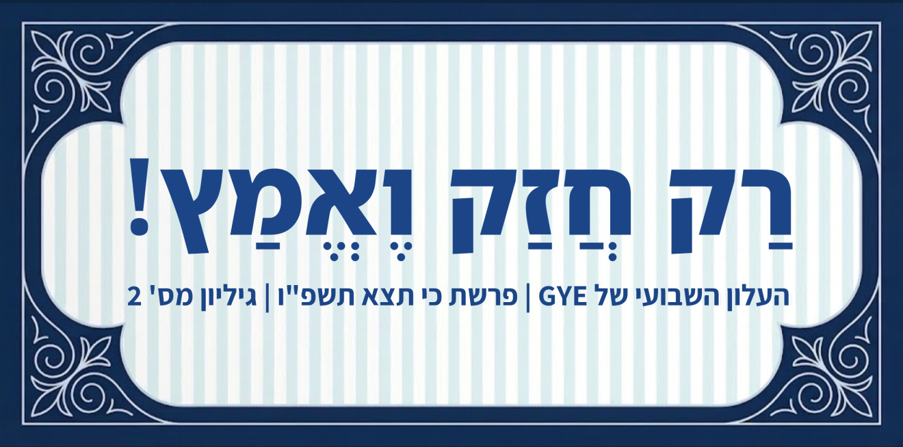
זום על עיטור הפינה — פי 3, בלי החלקה
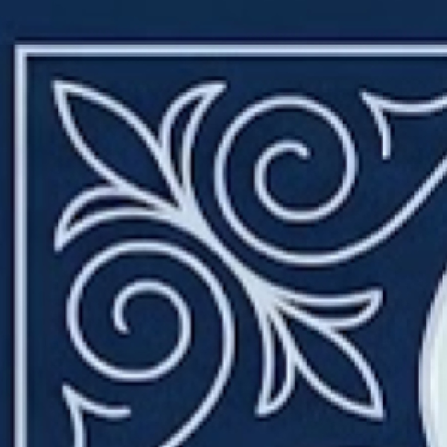
ב׳ — הבנייה מחדש
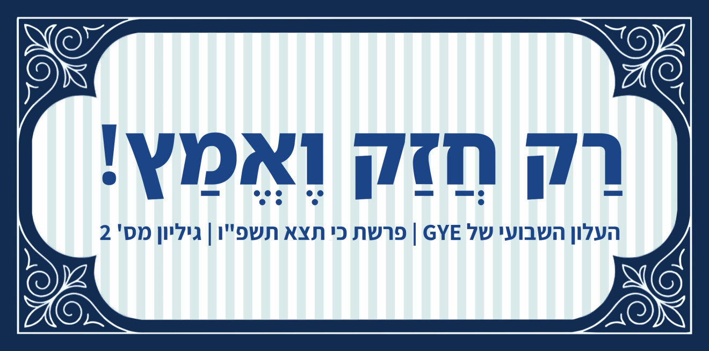
זום על עיטור הפינה — פי 3, בלי החלקה
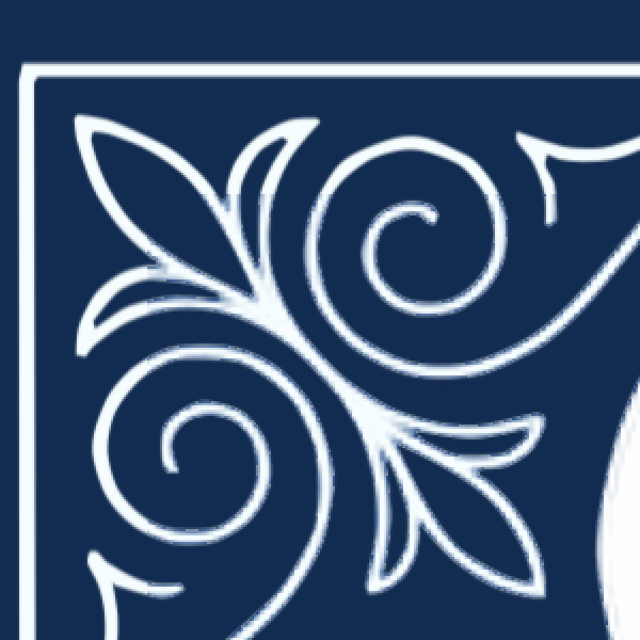
מה נעשה בב׳: כל רקע הכותרת בקובץ שלך הוא תמונה אחת ברוחב 934
פיקסלים, שהוטמעה בסליידס ונמתחה פי 2.7 — משם כל הטשטוש. הכיתוב עצמו כבר וקטורי וחד, ולכן הוא נשאר
בדיוק כפי שהוא. מה שצויר מחדש: המסגרת, הלוח והפסים, וארבעת עיטורי הפינה.
ולגבי ההבדל בצבע: אין הבדל בצבע. מדדתי —
הכחול ב-א׳ הוא
19,45,81 וב-ב׳ 18,44,81, ורקע הלוח 238,246,245
מול 236,244,244. זה אותו צבע. מה שהעין רואה הוא הניגודיות: ב-א׳ הקווים הלבנים הדקים
מטושטשים ו"נמרחים" לתוך הכחול, וזה מבהיר את כל האזור. ב-ב׳ הקו נגמר בדיוק היכן שהוא נגמר, ולכן
אותו כחול בדיוק נראה עמוק יותר. כלומר אין כאן מה לבחור — זו תוצאה של החדות, לא החלטת צבע.